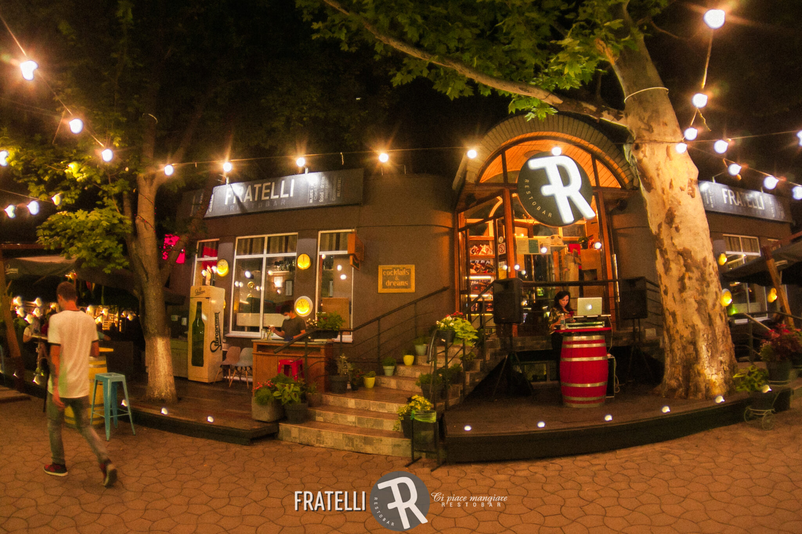
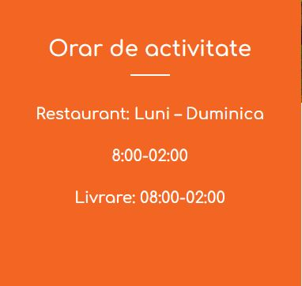

Fratelli RestoBar
Despre Fratelli RestoBar
Avem convingerea ca satisfacţia de a primi oaspeţi izvorăşte din bucuria întâlnirilor. Considerăm că rolul nostru de ospitalieri se împlineşte în momentele în care reuşim să vă oferim un loc, o atmosferă potrivită pentru întâlnirile mari, poate chiar neobişnuite. Promisiunea Fratelli este de a servi mâncare gustoasă, sănătoasă, făcută cu mult drag, folosind ingredinte simple și ecologice crescute pe meleagurile Căprianei.
Cum se gătește?
Muzică vie
Sergiu PLOP – Saxofon
Sergiu DRUGUSH- Saxofon
Andrei DRUȚĂ – Nai
DJ Hanzee

